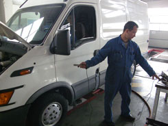
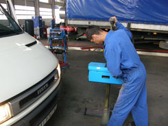

Diagnostics
Diagnostic Center: Center for technical Inspection
Truck Centre Ltd. is well equipped with a wide range of universal diagnostic tools for any means of road transport equipment.
From the year 2009 Truck Centre Ltd. carries out annual technical inspections of road transport equipment for State Certificate of Technical Inspection and also for the inspection of compliance of technical requirements for
"CERTIFICAT INTERNATIONAL DE CONTROLE TECHNIQUE"
Truck Centre Ltd. is certified to carry out the above mentioned inspections for the following categories of vehicles:
M1 - passenger cars;
M2, M3 - buses and coaches;
N1, N2, N3 - trucks and tractors;
O1, O2, O3, O4 - trailers and semi-trailers
Truck Centre Ltd. provides you with detailed  diagnosis of your vehicles in
diagnosis of your vehicles in  accordance with the requirements of the annual Technical Inspection. In addition, extended diagnoses of different systems of your vehicle can be carried out.
accordance with the requirements of the annual Technical Inspection. In addition, extended diagnoses of different systems of your vehicle can be carried out.
The diagnosis is executed on a special certified diagnostic pit, with amongst others the following dedicated equipment and tools:
- computerized roller brake tester for complete vehicle combinations, with axle load simulator
- side-slip tester
- play detector
- summary play of steering system indicator
- vehicle alignment equipment (with laser)
- headlight tester
- diesel smoke tester
- exhaust tester for petrol engines
- tacho-calibration equipment
- glass transparency indicator
- noise level indicator
- wheel pressure manometer
- other measuring tools.


In addition Truck Centre Ltd. also offers: - Bosch fuel pump diagnosis and adjustment service
- computer diagnostics of DAF electronic systems
- special diagnostic tools for ZF gearbox
- computer diagnostic of Brake electronic systems WABCO, Knorr
- wheel balancing service (stationary as well as "on-truck")
In-time detailed technical diagnosis of your vehicles is an important part of preventive maintenance. It contributes to improved reliability of your transport operations and increases the level of road safety.
Truck Centre Ltd. is your skilled and well-equipped partner to achieve a safe and reliable operation of your transport equipment.